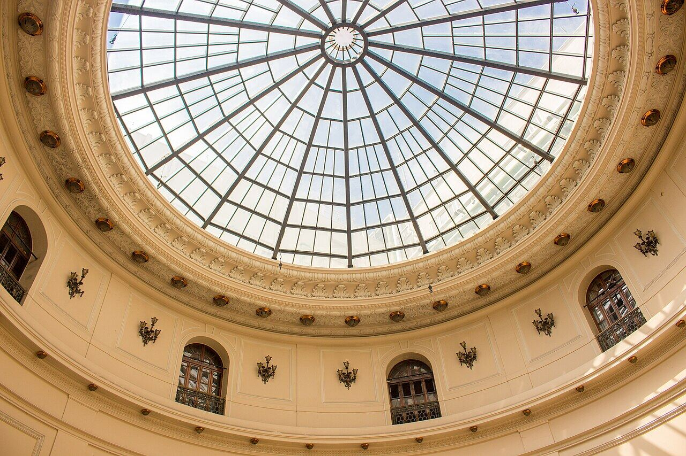
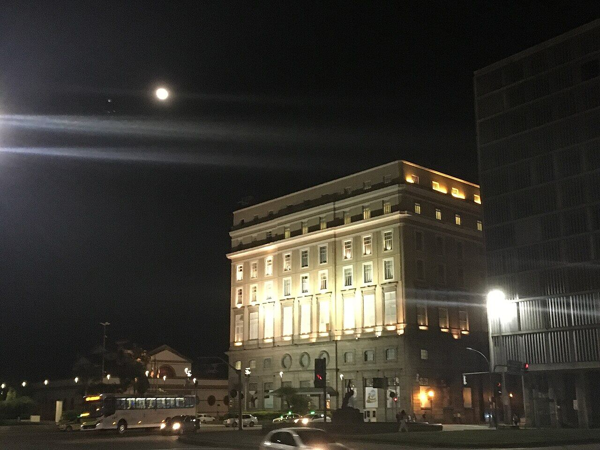
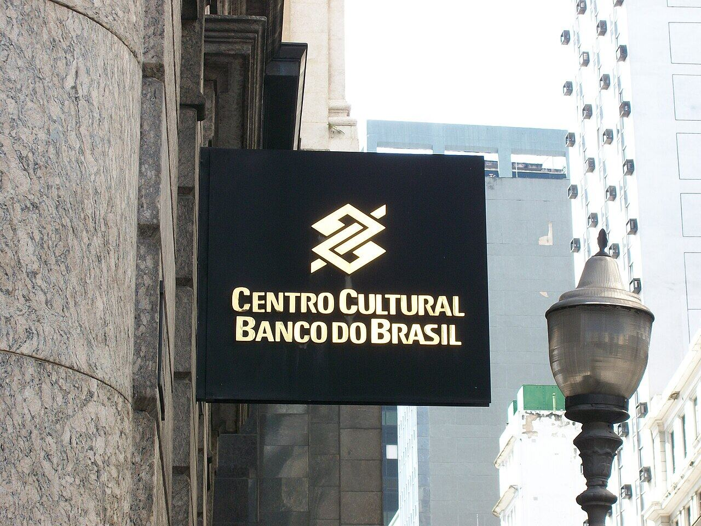

CCBB Rio
Centro
Exposições num prédio histórico, com café e livraria.
Nosso comentário
O Centro Cultural Banco do Brasil ocupa um prédio de 1906 com uma rotunda central muito bonita. As exposições costumam ser ótimas e a entrada é gratuita ou barata. Tem café e livraria para uma pausa.
Dicas
- Vejam a programação no site antes de ir.
- Confiram o dia em que o centro fecha na semana.
Combina com
- Praça XV, Paço Imperial e Arco do Teles de dia
- Centro histórico de dia
Fotos do lugar


